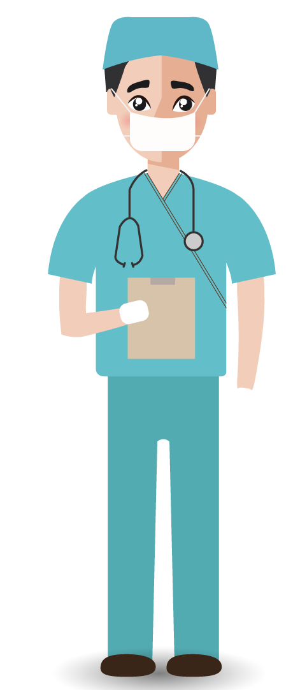

Vous êtes perdus dans vos vaccins ou
vous partez à l’étranger et vous voulez
connaitre les vaccins recommandés pour
votre destination afin de garantir votre
santé et celle de votre famille ?
Créez votre
carnet de vaccination électronique afin de
simplifier le suivi médical de vos vaccins.
Facilite l’accès à votre carnet de vaccination grâce à un interface simple d’utlisation.
Ne vous encombrez plus avec un carnet papier et ne perdez plus votre temps à le chercher partout.
Vos données seront protégées et partagées seulement quand vous le souhaiterez.
E-vaccin est un site créé par un collectif de médecin dans le but de faciliter la vie de millions de patients mais aussi des professionnels de santé. La plateforme e-vaccin rend plus pratique le suivi médical des patients et permet aux médecins de consulter plus facilement si le patient est à jour ou non dans ses vaccins.
